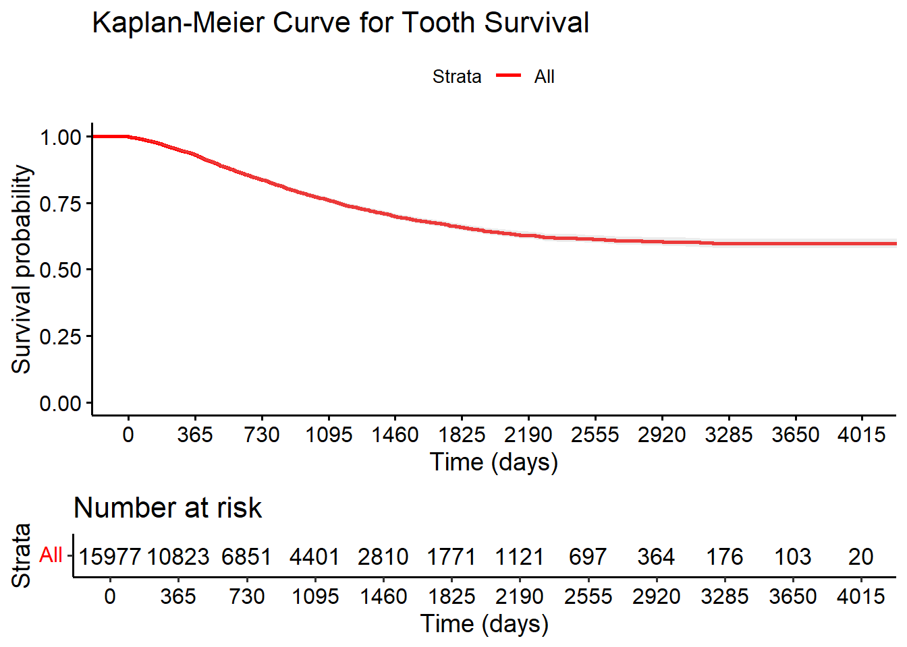
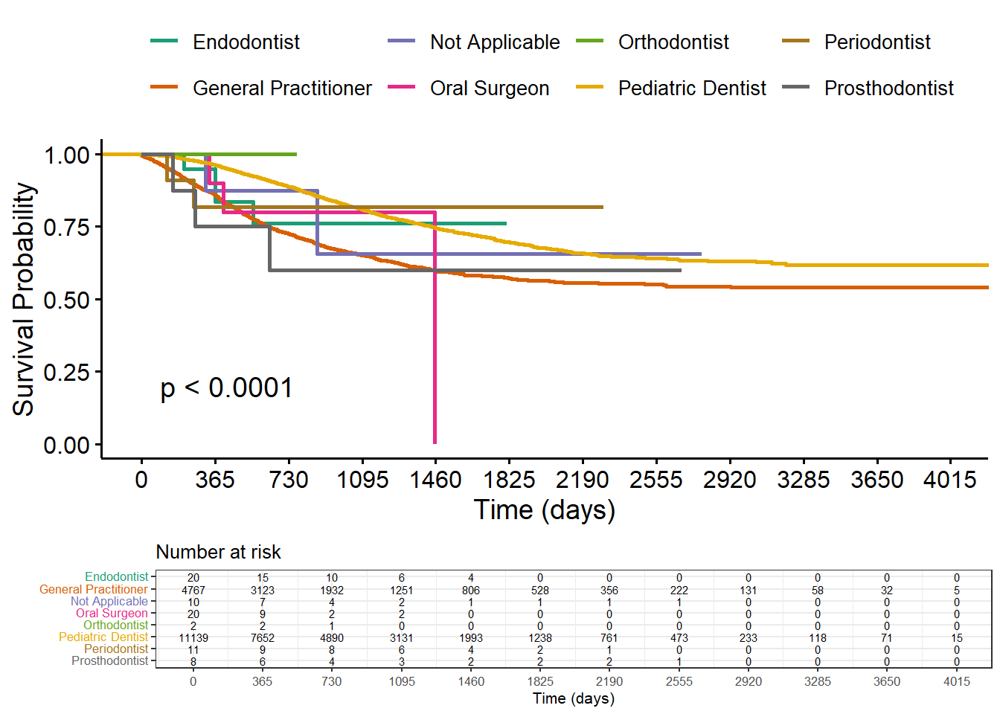
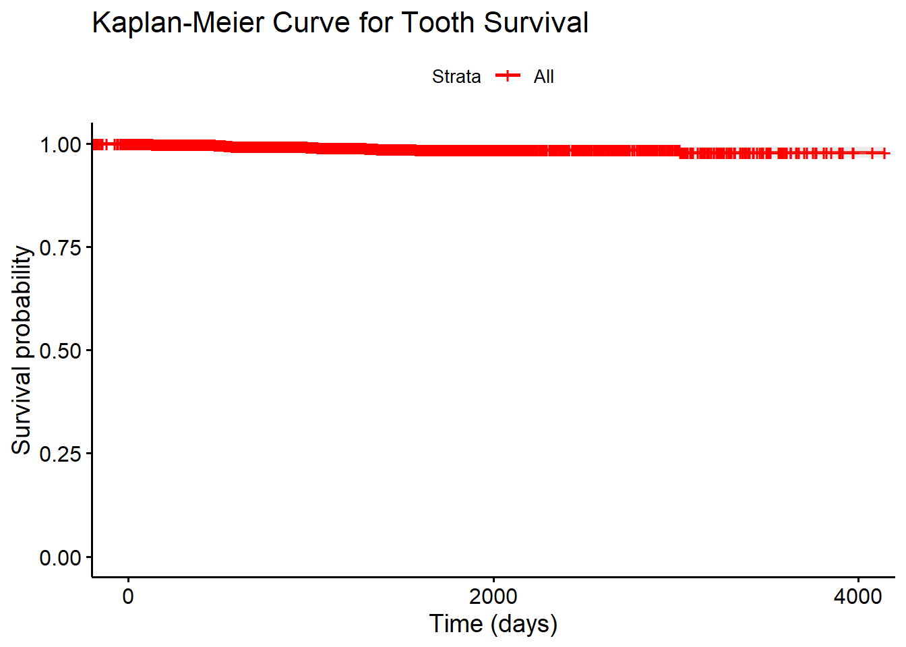
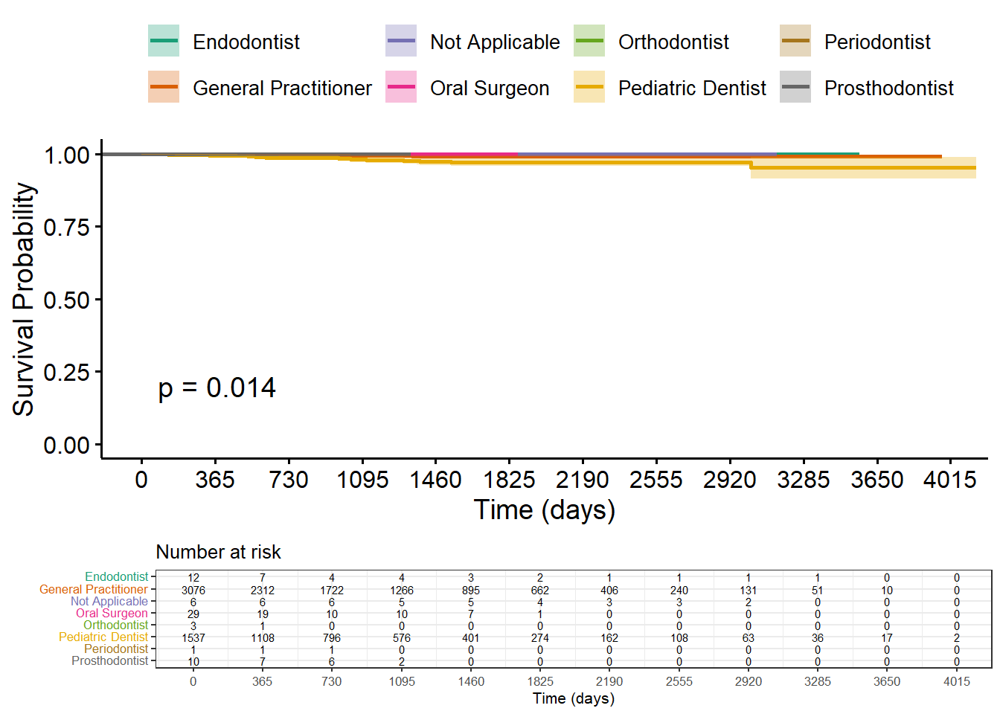

Last updated: 2025-06-05
Checks: 6 1
Knit directory: Oral-public-health/
This reproducible R Markdown analysis was created with workflowr (version 1.7.1). The Checks tab describes the reproducibility checks that were applied when the results were created. The Past versions tab lists the development history.
The R Markdown file has unstaged changes. To know which version of
the R Markdown file created these results, you’ll want to first commit
it to the Git repo. If you’re still working on the analysis, you can
ignore this warning. When you’re finished, you can run
wflow_publish to commit the R Markdown file and build the
HTML.
Great job! The global environment was empty. Objects defined in the global environment can affect the analysis in your R Markdown file in unknown ways. For reproduciblity it’s best to always run the code in an empty environment.
The command set.seed(20240422) was run prior to running
the code in the R Markdown file. Setting a seed ensures that any results
that rely on randomness, e.g. subsampling or permutations, are
reproducible.
Great job! Recording the operating system, R version, and package versions is critical for reproducibility.
Nice! There were no cached chunks for this analysis, so you can be confident that you successfully produced the results during this run.
Great job! Using relative paths to the files within your workflowr project makes it easier to run your code on other machines.
Great! You are using Git for version control. Tracking code development and connecting the code version to the results is critical for reproducibility.
The results in this page were generated with repository version de898e4. See the Past versions tab to see a history of the changes made to the R Markdown and HTML files.
Note that you need to be careful to ensure that all relevant files for
the analysis have been committed to Git prior to generating the results
(you can use wflow_publish or
wflow_git_commit). workflowr only checks the R Markdown
file, but you know if there are other scripts or data files that it
depends on. Below is the status of the Git repository when the results
were generated:
Ignored files:
Ignored: .Rhistory
Ignored: analysis/ddwi_part1_cache/
Ignored: analysis/part1_cache/
Unstaged changes:
Modified: analysis/ddwi_part2_survival_analysis.Rmd
Note that any generated files, e.g. HTML, png, CSS, etc., are not included in this status report because it is ok for generated content to have uncommitted changes.
These are the previous versions of the repository in which changes were
made to the R Markdown
(analysis/ddwi_part2_survival_analysis.Rmd) and HTML
(docs/ddwi_part2_survival_analysis.html) files. If you’ve
configured a remote Git repository (see ?wflow_git_remote),
click on the hyperlinks in the table below to view the files as they
were in that past version.
| File | Version | Author | Date | Message |
|---|---|---|---|---|
| Rmd | ee89e19 | han | 2025-05-21 | 5/21/2025 |
| html | ee89e19 | han | 2025-05-21 | 5/21/2025 |
| Rmd | 8ba5fe7 | han | 2025-05-21 | 5/21/2025 |
| html | 8ba5fe7 | han | 2025-05-21 | 5/21/2025 |
| html | e1ebe52 | han | 2025-05-07 | 5/7/2025 |
| Rmd | c85ae86 | han | 2025-05-07 | 5/7/2025 |
| html | c85ae86 | han | 2025-05-07 | 5/7/2025 |
path="C:\\Shengtong\\Research\\AllCollaboration\\2024\\202405\\Pradeep\\DDWI\\DDWI\\"
all_data=readRDS(paste(path, "all_data.rds", sep=""))
# Loop over each element of all_data and process demographic and claims
processed_list <- lapply(all_data, function(data_item) {
# Standardize column names
colnames(data_item$`Demographic (1)`) <- colnames(data_item$`Demographic `)
colnames(data_item$`Claims and Provider (1)`) <- colnames(data_item$`Claims and Provider `)
# Combine
demographic_combined <- rbind(data_item$`Demographic `, data_item$`Demographic (1)`)
claims_combined <- rbind(data_item$`Claims and Provider `, data_item$`Claims and Provider (1)`)
# Remove unnecessary columns
demographic_combined <- demographic_combined %>%
select(-`Subscriber Address Line 1`, -`Subscriber Address Line 2`, -`Subscriber City`, -`Subscriber Zip Code`)
claims_combined <- claims_combined %>%
select(-`Allowed Amount`, -`Paid Amount`, -`Provider Name`,
-`Clinic Address Line 1`, -`Clinic Address Line 2`,
-`Clinic City`, -`Clinic Zip Code`)
# Return the result for this element
list(
demographic = demographic_combined,
claims = claims_combined
)
})
# Now combine all demographic and claims across all 10 elements
demographic_combined_all <- do.call(rbind, lapply(processed_list, `[[`, "demographic"))
claims_combined_all <- do.call(rbind, lapply(processed_list, `[[`, "claims"))
claims_combined_all$member_tooth_number=paste(claims_combined_all$`Unique Member ID`, claims_combined_all$`Tooth Number`, sep=":")
library(qs)
qsave(demographic_combined_all, paste(path, "demographic_combined_all.qs", sep=""))
qsave(claims_combined_all, paste(path, "claims_combined_all.qs", sep=""))library(qs)
path="C:\\Shengtong\\Research\\AllCollaboration\\2024\\202405\\Pradeep\\DDWI\\DDWI\\"
demo <- qread(paste(path, "demographic_combined_all.qs", sep=""))
claims <- qread(paste(path, "claims_combined_all.qs", sep=""))compute_survival <- function(tooth_id, claims, demo, index = NA, start_code) {
message("Processing [", index, "/", length(teeth_sample), "]: ", tooth_id)
# Same logic as before...
single_tooth_claim_data <- claims %>%
filter(member_tooth_number == tooth_id)
if (nrow(single_tooth_claim_data) == 0) {
return(data.frame(
Tooth_ID = tooth_id,
Start_Date = NA,
End_Date = NA,
Survival_Time_Days = NA,
Event_Observed = NA,
Index = index,
provider_specialty=NA,
surface_area_code=NA
))
}
member_id <- single_tooth_claim_data$`Unique Member ID`[1]
single_tooth_demo_data <- demo %>%
filter(`Unique Member ID` == member_id)
single_tooth_claim_data$`Service Date` <- as.Date(single_tooth_claim_data$`Service Date`)
termination_date <- as.Date(single_tooth_demo_data$`Member Termination Date`[1])
start_row <- single_tooth_claim_data %>%
filter(`Submitted Procedure Code` == start_code) %>%
slice(1)
if (nrow(start_row) == 0) {
return(data.frame(
Tooth_ID = tooth_id,
Start_Date = NA,
End_Date = NA,
Survival_Time_Days = NA,
Event_Observed = NA,
Index = index,
provider_specialty=NA,
surface_area_code=NA
))
}
start_date <- start_row$`Service Date`[1]
has_7140 <- single_tooth_claim_data %>%
filter(`Submitted Procedure Code` == 7140)
if (nrow(has_7140) > 0) {
end_date <- min(has_7140$`Service Date`, na.rm = TRUE)
event_observed <- 1
} else {
end_date <- termination_date
event_observed <- 0
}
survival_time <- as.numeric(difftime(end_date, start_date, units = "days"))
provider_specialty=claims %>%
filter(member_tooth_number == tooth_id) %>%
select(`Provider Specialty Name`) %>%
pull()
surface_area_code=claims %>%
filter(member_tooth_number == tooth_id) %>%
select(`All Surfaces Area Code`) %>%
pull()
return(data.frame(
Tooth_ID = tooth_id,
Start_Date = start_date,
End_Date = end_date,
Survival_Time_Days = survival_time,
Event_Observed = event_observed,
Index = index,
provider_specialty=provider_specialty[1],
surface_area_code=surface_area_code[1]
))
}teeth_sample=claims %>% filter(`Submitted Procedure Code`==3220) %>% select(member_tooth_number) %>% pull()
survival_results <- map2_dfr(
.x = teeth_sample,
.y = seq_along(teeth_sample),
.f = ~compute_survival(tooth_id = .x, claims = claims, demo = demo, index = .y, start_code=3220)
)
#qsave(survival_results, paste(path, "survival_results_for_code3220.qs", sep=""))survival_results=qread(paste(path, "survival_results_for_code3220.qs", sep=""))
# Assuming your data frame is named survival_results
survival_results_clean <- survival_results[!grepl("^9999", survival_results$End_Date), ]library(survival)
library(survminer)
# Create the survival object
surv_obj <- Surv(time = survival_results_clean$Survival_Time_Days,
event = survival_results_clean$Event_Observed)
# Fit the Kaplan-Meier model
km_fit <- survfit(surv_obj ~ 1, data = survival_results_clean)
# Plot the KM curve: red curve, gray confidence interval
ggsurvplot(km_fit,
data = survival_results_clean,
conf.int = TRUE,
conf.int.fill = "gray", # Set confidence band to gray
xlab = "Time (days)",
ylab = "Survival probability",
title = "Kaplan-Meier Curve for Tooth Survival",
palette = "red") # Set curve color to red
fit <- survfit(Surv(Survival_Time_Days, Event_Observed) ~ provider_specialty, data = survival_results_clean)
# Extract labels in the correct order
labels <- sub(".*=", "", names(fit$strata))
ggsurvplot(fit,
data = survival_results_clean,
pval = TRUE,
risk.table = TRUE,
xlab = "Time (days)",
ylab = "Survival Probability",
legend.title = "",
legend.labs = labels,
palette = "Dark2",
risk.table.fontsize = 2,
tables.theme = theme_bw(base_size = 8))
| Version | Author | Date |
|---|---|---|
| 8ba5fe7 | han | 2025-05-21 |
start_code=3120
teeth_sample=claims %>% filter(`Submitted Procedure Code`==start_code) %>% select(member_tooth_number) %>% pull()
#teeth_sample=teeth_sample[1:3]
survival_results <- map2_dfr(
.x = teeth_sample,
.y = seq_along(teeth_sample),
.f = ~compute_survival(tooth_id = .x, claims = claims, demo = demo, index = .y, start_code=3120)
)
#qsave(survival_results, paste(path, "survival_results_for_code", start_code, ".qs", sep=""))start_code=3120
survival_results=qread(paste(path, "survival_results_for_code", start_code, ".qs", sep=""))
# Assuming your data frame is named survival_results
survival_results_clean <- survival_results[!grepl("^9999", survival_results$End_Date), ]
library(survival)
library(survminer)
# Create the survival object
surv_obj <- Surv(time = survival_results_clean$Survival_Time_Days,
event = survival_results_clean$Event_Observed)
# Fit the Kaplan-Meier model
km_fit <- survfit(surv_obj ~ 1, data = survival_results_clean)
# Plot the KM curve: red curve, gray confidence interval
ggsurvplot(km_fit,
data = survival_results_clean,
conf.int = TRUE,
conf.int.fill = "gray", # Set confidence band to gray
xlab = "Time (days)",
ylab = "Survival probability",
title = "Kaplan-Meier Curve for Tooth Survival",
palette = "red") # Set curve color to red
fit <- survfit(Surv(Survival_Time_Days, Event_Observed) ~ provider_specialty, data = survival_results_clean)
# Extract labels in the correct order
labels <- sub(".*=", "", names(fit$strata))
ggsurvplot(fit,
data = survival_results_clean,
pval = TRUE,
risk.table = TRUE,
xlab = "Time (days)",
ylab = "Survival Probability",
legend.title = "",
legend.labs = labels,
palette = "Dark2",
risk.table.fontsize = 2,
tables.theme = theme_bw(base_size = 8))survival_results1=qread(paste(path, "survival_results_for_code", 3220, ".qs", sep=""))
survival_results2=qread(paste(path, "survival_results_for_code", 3120, ".qs", sep=""))
survival_combined=rbind(survival_results1, survival_results2)
survival_combined$code=c(rep("3220", nrow(survival_results1)), rep("3120", nrow(survival_results2)))
survival_combined_clean <- survival_combined[!grepl("^9999", survival_combined$End_Date), ]# Create a Surv object
surv_object <- Surv(time = survival_combined_clean$Survival_Time_Days,
event = survival_combined_clean$Event_Observed)
# Fit a survival model by 'code'
fit <- survfit(surv_object ~ code, data = survival_combined_clean)
# Plot the survival curves
ggsurvplot(
fit,
data = survival_combined_clean,
pval = TRUE, # Add p-value for log-rank test
conf.int = TRUE, # Add confidence intervals
risk.table = TRUE, # Show number at risk
legend.title = "Code",
xlab = "Time in Days",
ylab = "Survival Probability",
palette = "Dark2", # Use a nice color palette
risk.table.fontsize = 3 # smaller font size (try 2 to 4 for smaller text)
)
sessionInfo()R version 4.3.2 (2023-10-31 ucrt)
Platform: x86_64-w64-mingw32/x64 (64-bit)
Running under: Windows 10 x64 (build 19045)
Matrix products: default
locale:
[1] LC_COLLATE=English_United States.utf8
[2] LC_CTYPE=English_United States.utf8
[3] LC_MONETARY=English_United States.utf8
[4] LC_NUMERIC=C
[5] LC_TIME=English_United States.utf8
time zone: America/Chicago
tzcode source: internal
attached base packages:
[1] grid stats graphics grDevices utils datasets methods
[8] base
other attached packages:
[1] survminer_0.5.0 survival_3.8-3 qs_0.27.3
[4] VennDiagram_1.7.3 futile.logger_1.4.3 condsurv_1.0.0
[7] devtools_2.4.5 usethis_3.1.0 tidycmprsk_1.1.0
[10] gtsummary_2.0.4 ggsurvfit_1.1.0 irr_0.84.1
[13] lpSolve_5.6.23 readxl_1.4.3 cowplot_1.1.3
[16] matrixStats_1.5.0 gridExtra_2.3 DT_0.33
[19] rstatix_0.7.2 ggpubr_0.6.0 kableExtra_1.4.0
[22] lubridate_1.9.4 forcats_1.0.0 stringr_1.5.1
[25] dplyr_1.1.4 purrr_1.0.2 readr_2.1.4
[28] tidyr_1.3.1 tibble_3.2.1 ggplot2_3.5.1
[31] tidyverse_2.0.0 rprojroot_2.0.4
loaded via a namespace (and not attached):
[1] formatR_1.14 remotes_2.5.0 rlang_1.1.2
[4] magrittr_2.0.3 git2r_0.35.0 compiler_4.3.2
[7] systemfonts_1.2.1 vctrs_0.6.5 profvis_0.4.0
[10] pkgconfig_2.0.3 fastmap_1.2.0 backports_1.5.0
[13] ellipsis_0.3.2 labeling_0.4.3 KMsurv_0.1-5
[16] promises_1.3.2 rmarkdown_2.29 markdown_1.13
[19] sessioninfo_1.2.2 tzdb_0.4.0 xfun_0.50.6
[22] cachem_1.1.0 jsonlite_1.8.9 later_1.4.1
[25] broom_1.0.7 R6_2.5.1 RColorBrewer_1.1-3
[28] bslib_0.9.0 stringi_1.8.3 car_3.1-3
[31] pkgload_1.4.0 jquerylib_0.1.4 cellranger_1.1.0
[34] Rcpp_1.0.11 knitr_1.49 zoo_1.8-14
[37] httpuv_1.6.15 Matrix_1.6-1.1 splines_4.3.2
[40] timechange_0.3.0 tidyselect_1.2.1 rstudioapi_0.17.1
[43] abind_1.4-8 yaml_2.3.8 stringfish_0.16.0
[46] ggtext_0.1.2 miniUI_0.1.1.1 pkgbuild_1.4.6
[49] lattice_0.21-9 shiny_1.10.0 withr_3.0.2
[52] evaluate_1.0.3 lambda.r_1.2.4 RcppParallel_5.1.10
[55] urlchecker_1.0.1 xml2_1.3.6 survMisc_0.5.6
[58] pillar_1.10.1 carData_3.0-5 whisker_0.4.1
[61] generics_0.1.3 hms_1.1.3 commonmark_1.9.2
[64] munsell_0.5.1 scales_1.3.0 RApiSerialize_0.1.4
[67] xtable_1.8-4 glue_1.8.0 tools_4.3.2
[70] data.table_1.16.4 ggsignif_0.6.4 fs_1.6.5
[73] colorspace_2.1-0 Formula_1.2-5 cli_3.6.2
[76] km.ci_0.5-6 workflowr_1.7.1 futile.options_1.0.1
[79] viridisLite_0.4.2 svglite_2.1.3 gtable_0.3.6
[82] sass_0.4.9 digest_0.6.33 farver_2.1.2
[85] htmlwidgets_1.6.4 memoise_2.0.1 htmltools_0.5.8.1
[88] lifecycle_1.0.4 mime_0.12 gridtext_0.1.5